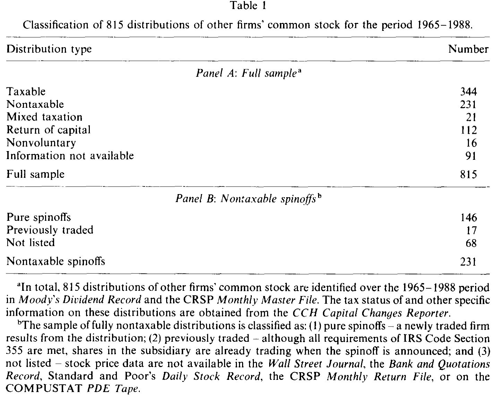
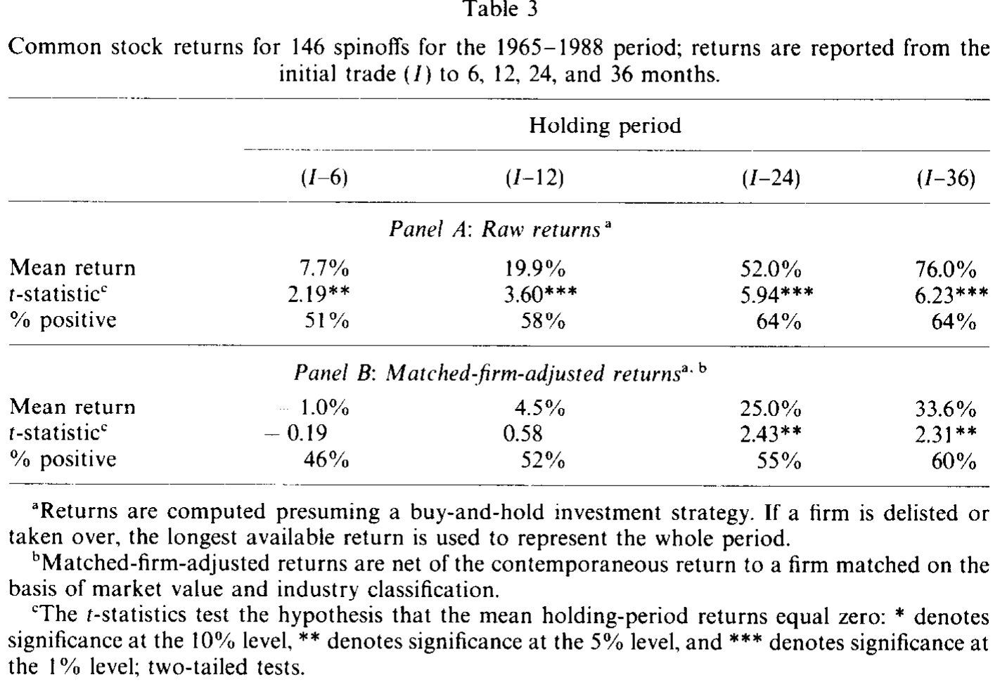
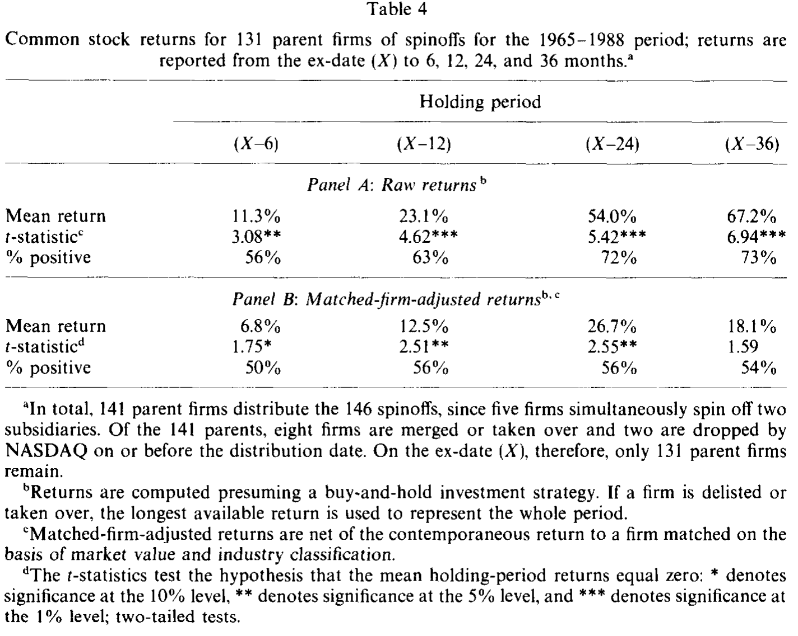
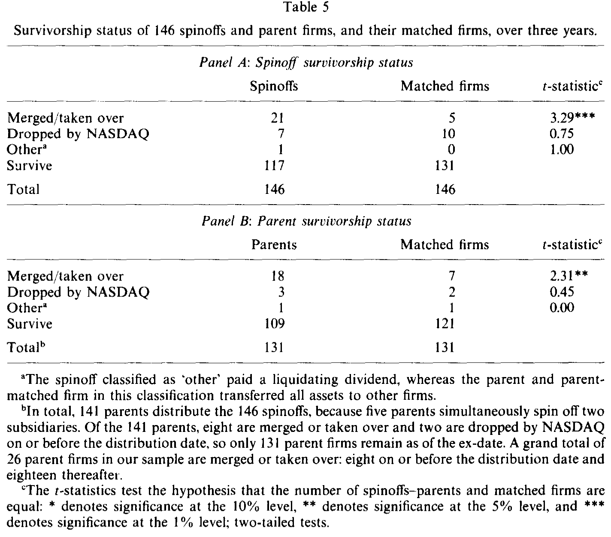
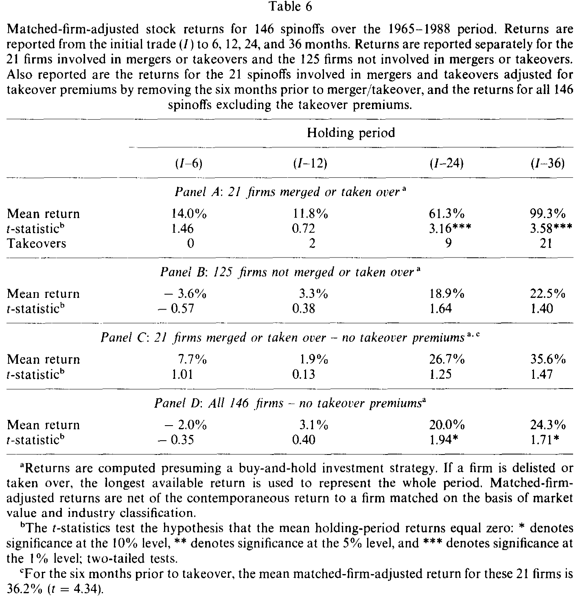
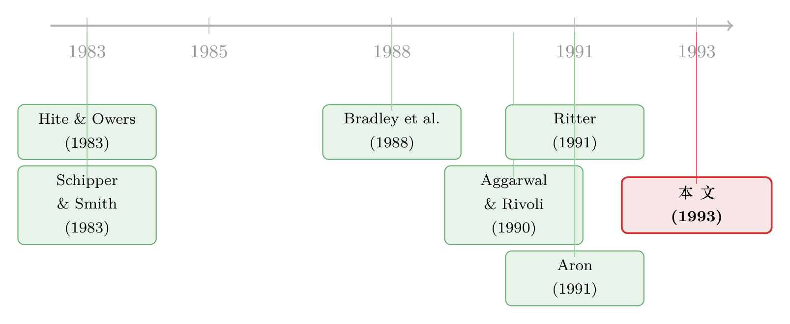

拆完公司，钱在三年后才显形——而它只发给被收购的那一半
本文读的是 Cusatis, Miles & Woolridge (1993, Journal of Financial Economics)：把 1965–1988 年间 146 起「纯分拆」(pure spinoff) 的母子公司股票一路跟踪三年，发现分拆出来的子公司、母公司、乃至母子组合，都拿到了显著为正的长期超额收益（子公司两年期 MFAR 达 25.0%、三年期 33.6%）。但真正的反转在于：这些超额收益几乎全部来自被收购的那一小撮公司——分拆，本质上是一种把公司资产低成本「交付」给收购方的方式。
1 一个流传在商业媒体上的「都市传说」
先讲一个让学院派金融学家很尴尬的现象。
彼得·林奇 (Peter Lynch) 在《One Up on Wall Street》里白纸黑字地推荐：买分拆出来的股票。《Forbes》《Wall Street Journal》《Business Week》也隔三差五地登文章，说这些被母公司「扫地出门」的子公司是被市场遗忘的金矿。一句话，华尔街的民间智慧坚信：买 spinoff 能跑赢大盘。
可学术界对此基本是不屑一顾的。原因有二。
其一，按有效市场的逻辑，分拆这件事在宣告日就该被一次性定价完毕。事实上，早期的分拆研究——Hite & Owers (1983)、Schipper & Smith (1983)、Miles & Rosenfeld (1983)——量的全是母公司在宣告日前后那几天的股价反应，结论是显著为正。既然宣告日股价已经涨了，那就说明市场已经把分拆的好处一次性吸收了，之后不该再有任何可预测的超额收益。
其二，分拆出来的子公司，本质上是一批「新挂牌的股票」，这一点和首次公开发行 (initial public offering, IPO) 非常像。而恰恰在这几年，Aggarwal & Rivoli (1990) 和 Ritter (1991) 给 IPO 判了死刑：新股上市后长达三年的长期表现是显著为负的（关于这种「上市后跌跌不休」其实可能是一道算术题的争论，可参见《为什么「上市后跌跌不休」可能是一道算术题？》）。既然新股长期跑输，那长得像新股的 spinoff，凭什么反而能跑赢？
于是一道张力就摆在了这里：民间传说说能赚，理论和「近亲」IPO 都说不能赚。 谁对？
这篇论文做的事很笨，但很有说服力：它不再盯着宣告日那几天，而是把每一家分拆出来的子公司、连同它的母公司，从挂牌的第一天起一路买入并持有三年，看看到底发生了什么。
2 怎么把「长期超额收益」量干净
要回答这个问题，第一步是把「跑赢」这件事量得让人无话可说。这里有两个魔鬼藏在细节里：怎么算收益，以及拿什么当基准。
算法：买入持有，绝不调仓。 作者刻意采用买入持有 (buy-and-hold) 策略来计算收益，理由是 Roll (1983) 早就指出，频繁的组合再平衡 (rebalancing) 会同时引入偏误和交易成本。一只股票从挂牌第一天的收盘价买入，持有 T 期的原始收益是：
$$R_{i,T} = \left[\prod_{t=1}^{T}(1+r_{i,t})\right] - 1$$
其中 \(r_{i,t}\) 是公司 \(i\) 在第 \(t\) 期的收益（含价格涨跌与分红）。N 家公司的算术平均就是组合的原始收益。一个细节很重要：如果某家公司中途因为任何原因停止交易（被收购、被摘牌），就用它最后一个可得的股价算出截至当时的买入持有收益，并把这个收益一直用到后续所有区间——这等于把「中途出局」的信息也保留了下来，而不是简单地把它从样本里删掉。
基准：找一个「双胞胎」。 光看原始收益没意义，大盘涨它也涨。作者的做法是给每家 spinoff（和每家母公司）在分拆当天配一个对照公司 (matched firm)：用 COMPUSTAT II，按四位 SIC 行业代码和市值找一个最接近的同行。找不到就退到三位、两位、最后一位 SIC。于是有了这篇论文的核心度量——配对调整收益 (matched-firm-adjusted return, MFAR)，即逐对相减再取平均：
这一减，就同时把当期的市场收益和系统性风险（同行业同市值，beta 大致相当）都扣掉了。显著性则用配对样本 (matched-pairs) 的 t 统计量来判断：
$$t = \frac{MFAR_T}{s/\sqrt{N-1}}$$
\(s\) 是 N 家公司 MFAR 的样本标准差。匹配做得有多干净？spinoff 样本的平均市值是 $106 百万、对照公司 $104 百万；母公司是 $728 百万、对照 $723 百万——几乎严丝合缝。而且为了避免幸存者偏误 (survivorship bias)，一旦某个对照公司中途消失，就立刻在那个时点重新匹配一家新的进来。
为什么不直接用 CAPM 算 alpha？因为 spinoff 是一批没有历史数据、风险特征不明的新股票，估不出可靠的 beta。「找一个市值与行业都贴近的真实双胞胎」是一种不依赖任何资产定价模型的笨办法，反而更难被质疑。作者另外用 S&P 500 调整、NASDAQ 调整、以及 Ibbotson 的 RATS 模型都做了一遍，结论一致。
3 样本：146 起「纯」分拆
接着，一个自然的问题是：到底什么算「分拆」？这件事比想象中麻烦。
作者从 CCH Capital Changes Reporter、Moody's Dividend Record 和 CRSP 主文件里，捞出 1965–1988 年间 815 起「公司向股东分配其他公司股票」的事件，然后做了一道严格的减法。他们只要纯分拆——按美国国内税法 Section 355，免税、按比例 (pro-rata) 把一家全资子公司的股份分给股东，且母公司事后不再保留对子公司的「实际控制」。这意味着母公司是真的「把自己从子公司的管理和所有权里抽身出去」。
于是 344 起全额应税分拆、21 起混合税务、112 起资本返还、16 起非自愿分配统统被剔除。231 起免税自愿分拆里，再去掉 17 起在分拆时子公司股票已经在交易（不算「新」挂牌）和 68 起没有股价数据的，最终剩下 146 起纯分拆。其中 45 家初始挂在 NYSE、12 家 Amex、89 家在场外交易。母公司因为有 5 家同时分拆两个子公司、外加 10 家分拆后停止交易，到 ex-date 只剩 131 家。

Table 1
一个时代背景值得一提：75% 的分拆发生在样本期的最后十年，而且越往后规模越大。1980 年代正是美国公司「归核化」、拆解多元化集团的浪潮期——Kraft 把四个消费品部门打包分拆成 Premark International，General Mills 把玩具和时尚业务（Kenner Parker、Crystal Brands）甩出去，理由都写得很坦白：这些业务「波动太大」「和主业没有协同」，绑在一起反而拖累了估值。
4 第一个结果：子公司和母公司，长期都跑赢了
现在揭晓谜底。
短期：什么都没有。 从挂牌第一天收盘价算起，10 天、20 天、40 天的 MFAR 分别是 -0.9%、-1.5%、-1.6%，虽然清一色为负，但没有一个在常规水平上显著。也就是说，刚上市那阵子，spinoff 的表现和 IPO 没什么两样，都很平淡。民间传说在这个时间窗口上不成立。
但把镜头拉长到三年，画面完全变了。 子公司从挂牌日 (day I) 买入持有，12、24、36 个月的原始收益是 19.9%、52.0%、76.0%；扣掉双胞胎之后的 MFAR 是 4.5%、25.0%、33.6%。其中 24 个月和 36 个月的 MFAR 都在 5% 水平上显著（t 值 2.43 和 2.31）。一个反复出现、与调整方法无关的特征是：第二年（12–24 个月）表现尤其抢眼。

Table 3
母公司也没闲着。从 ex-date (X) 算起，12、24、36 个月的原始收益是 23.1%、54.0%、67.2%，MFAR 是 12.5%、26.7%、18.1%，其中 X-6 在 10% 水平显著（t = 1.75）、X-12 和 X-24 在 5% 水平显著（t = 2.51、2.55）。换句话说，分拆这件事，让被分出去的孩子和留下来的父母，双双跑赢了各自的同行。

Table 4
到这一步，民间传说似乎赢了，理论输了。市场没有在宣告日把好处定价完。于是 Cusatis 他们下了一个很关键的判断：用宣告日附近的事件研究去估分拆创造的总价值，是系统性低估的——因为有些东西，投资者在宣告时根本没料到。
那么，没料到的是什么？
5 反转：超额收益其实只发给了「被收购的那一半」
真正关键的一步，是作者没有停在「spinoff 能赚钱」这个结论上，而是去翻这 146 家公司三年后的生死簿。
结果触目惊心。到第三年末，有 29 家子公司、37 家母公司已经不再交易。退场有两种死法：一种是被 NASDAQ 因不达标摘牌（这种多半是烂公司），另一种是被收购（这种因为有收购溢价，多半是好公司）。而 spinoff 样本里被收购的比例，远远高于对照组：
- 21 家子公司被收购，对照公司只有 5 家（t =
3.29，1%显著）；子公司从分拆到被收购的平均间隔是 24 个月——恰好对上了「第二年表现最好」。 - 18 家母公司被收购，对照只有 7 家（t =
2.31，5%显著）；再加上 8 家在分拆当天前后就被收购的母公司，总共有 26 家母公司易主。

Table 5
这就把故事从「分拆能赚钱」推进到了「为什么能赚钱」。一个自然的猜想是：会不会全部的超额收益，都来自这一小撮被收购的公司？ 收购溢价本身就能制造惊人的回报。
作者把 146 家子公司一刀切成两半——被收购的 21 家，和没被收购的 125 家——分别算 MFAR。答案干净得近乎残忍：
- 被收购的 21 家：24 个月 MFAR
61.3%、36 个月99.3%，两个都在1%水平显著。 - 剩下的 125 家：24 个月
18.9%、36 个月22.5%，两个都不显著。

Table 6
于是反转坐实了：全样本那个漂亮的长期超额收益，几乎全是被收购的那 14% 公司贡献的；剩下的 86%，扣掉双胞胎之后其实平平无奇。
当然，聪明的读者会立刻反驳：被收购前 6 个月，股价早就被收购溢价推上去了，这算哪门子「分拆创造的价值」？作者也想到了。他们在 Panel C 里把被收购的 21 家公司、剔除被收购前 6 个月再算一遍 MFAR，得到 24 个月 26.7%、36 个月 35.6%——依然比全样本（表 3 的 25.0% 和 33.6%）更高，只是因为样本太小不再显著。在 Panel D 里，把全样本剔掉这 21 家的「收购前 6 个月」后，24/36 个月的 MFAR 是 20.0%、24.3%，回到 10% 显著。
这说明：收购溢价本身确实贡献了一部分，但即使把它扣掉，被收购公司在更早的两三年里也一直在悄悄跑赢。 市场早就嗅到了它们「要被吃掉」的味道，只是定价定得不够、不够快。
6 那么，分拆到底创造了什么价值？
把上面的线索串起来，这篇论文的核心论点就浮出来了——而它恰恰是标题里那句话：
分拆，提供了一种低成本地把公司资产的控制权转移给收购方的方法。
逻辑链是这样的：一家多元化的母公司，旗下某块业务对外部收购者可能很有价值（互补、协同、或单纯地「这块我比你会经营」），但收购方没法只买这一块——它和别的业务捆在一张资产负债表上。分拆，等于把这块业务剥离成一个干净的「纯玩家」(pure play)，让潜在买家可以精准地、单独地把它买走。这正是 Aron (1991) 模型预言的剧本：先用分拆改善激励，过一阵子再被收购、重新获得规模经济。
母公司这边同理——甩掉拖累后的「瘦身版」母公司，自己也更容易成为收购标的。
所以，分拆创造价值，不是（主要）因为「分开之后经营得更好」这种组织效率故事，而是因为它打通了公司控制权市场的一条低成本通道。投资者在宣告日没能完全预见后续这一波收购，所以才在随后两三年里「补涨」。
这条「分拆是为了重组控制权」的思路，和后来一批理论遥相呼应。比如有理论认为，分拆的真正动机是给经理人套上纪律的绳索（可参见《拆掉一家公司，是为了让老板「坐不住」》）；也有研究专门拆解分拆时的财务政策设计（见《公司利润越高，债反而越多？》）。而「分拆后投资是否真的更聪明」，则一直是个充满测量误差争议的问题（见《拆分真能让公司投得更聪明吗？》）。
7 文献脉络
把这篇论文放回它的坐标系，脉络其实很清晰。
最早的一代分拆研究，关心的全是宣告日：Hite & Owers (1983)、Schipper & Smith (1983)、Miles & Rosenfeld (1983) 不约而同地发现，母公司在分拆宣告前后股价显著上涨。但他们都止步于宣告日，没有人去跟踪分拆之后子公司和母公司的命运。值得一提的是，Hite & Owers 已经注意到，那些管理层明确说「分拆是为了便于并购」的子样本，宣告收益更高——这其实是本文「控制权转移」论点的一颗早期火种。
与此并行的，是 IPO 长期表现这条线：Aggarwal & Rivoli (1990)、Ritter (1991) 把新股长期跑输大盘钉成了「定论」，给本文提供了一个绝佳的反差参照——同样是新挂牌股票，spinoff 偏偏跑赢。
而把这两条线接到一起的，是 Aron (1991) 的代理框架：它在理论上预言了「先分拆改善激励、后被收购重获规模经济」的序列。本文，正是这套理论的一次大样本实证落地；方法上则站在 Roll (1983) 关于买入持有与小公司溢价的肩膀上。

8 评论与延伸（Q&A + 研究方向）
(a) 几个可能的疑问
Q：既然超额收益只来自被收购的公司，那「买所有 spinoff」这个策略到底还成不成立？
成立，但理由变了。你不是买到了一篮子会经营得更好的公司，而是买到了一篮子「收购概率异常高」的公司——其中 14% 会在三年内被收购并贡献近 100% 的超额收益，剩下 86% 大致打平。本质上这是一个事前无法分辨、事后高度集中的彩票型组合。
Q：会不会是幸存者偏误或数据挖掘在作怪？
作者在这一点上相当克制。中途出局的公司用最后股价继续计入收益（不删样本），对照组允许动态替换以避免幸存者偏误，匹配市值几乎完全吻合，且 S&P 500、NASDAQ、RATS 三种调整结论一致。剩下的真正担忧是样本太小（被收购子样本只有 21 家）和长期收益统计推断本身的脆弱性。
Q：第二年（12–24 个月）表现特别好，这是巧合吗？
不太像巧合。子公司从分拆到被收购的平均间隔正好是 24 个月，这与「第二年超额收益最高」在时间上严丝合缝，支持「市场逐渐 price-in 收购预期」的解释，而非随机波动。
Q：母公司也跑赢了，这和「子公司被收购」的故事矛盾吗？
不矛盾。瘦身后的母公司自身也更容易成为收购标的——总共 26 家母公司易主。母公司的超额收益（尤其前两年显著、第三年转不显著）同样可以纳入「控制权重组」这条主线。
Q：这是否意味着宣告日事件研究「错了」？
不是错，是「不完整」。宣告日股价确实涨了，但投资者没有充分预见后续这一波收购，因此事件研究系统性地低估了分拆创造的总价值。这恰恰是本文方法论上的贡献：要量分拆的真实价值，必须把窗口拉长到数年。
Q：为什么用配对公司而不是 CAPM？这会不会偷偷塞进了什么偏误？
因为新股估不出可靠 beta，配对法不依赖任何定价模型，更稳健。潜在代价是：若 spinoff 与对照公司在 beta 之外还存在系统性差异（比如同样高的「被收购概率」未被匹配上），调整就不彻底。不过作者额外用了多种基准，缓解了这一担忧。
(b) 几个可能的研究问题与提案
1. 把「被收购概率」做成事前可预测的信号。 【经济故事】既然超额收益高度集中在事后被收购的公司，那么如果能用分拆时点的可观测特征（业务纯度、行业并购热度、母公司持股结构）事前预测哪家会被收购，就能把这个「彩票组合」改造成一个可执行的择股策略。 【可行性】高。所需数据（SDC 并购库、CRSP/Compustat、分拆样本）成熟，识别上是一个标准的事前预测 + 事后样本外检验问题，doable。
2. 分拆出来的子公司，其债券与信用利差怎么走？ 【经济故事】控制权转移对股东是好消息，但对债权人未必。一家「纯玩家」子公司失去了母公司的内部资本市场与隐性担保，信用风险可能上升；若随后被收购，债权人的命运又取决于收购方的资质。这是股债利益冲突的一个干净场景。 【可行性】中。需要 TRACE/Mergent FISD 的公司债数据，且分拆主体单独发债的样本有限；可聚焦于发债的较大型分拆，识别上用事件窗口围绕分拆与后续收购公告。
3. 外资持有人在分拆—收购链条中扮演什么角色？ 【经济故事】纯玩家更透明、更易被外部投资者理解和定价，可能吸引外资增持；而外资的进入又可能改变后续被收购的概率与溢价。这把分拆与「外资是否改善信息环境/控制权市场」的争论连了起来。 【可行性】中。需 13F 及跨境持股数据（如 FactSet/Refinitiv）匹配分拆样本，识别上可用分拆作为持股结构的外生冲击，但外资偏好的内生性需小心处理。
4. 用现代交错事件研究方法重估分拆的长期收益。 【经济故事】本文的长期买入持有 + 配对 t 检验，在今天看来推断偏弱。用 calendar-time 组合、bootstrap、或交错 DiD 的稳健推断重做一遍 1965 至今的扩展样本，能检验「被收购集中贡献超额收益」是否经得起更严格的统计审视。 【可行性】高。纯方法 + 公开数据复刻，doable，且与近年对长期收益推断的方法论反思直接对话。
9 参考文献与我的判断
我的判断是：这篇论文的真正贡献，不在于「证明了 spinoff 能赚钱」这个略带民科色彩的结论，而在于它把一个看似异象的长期超额收益，干净利落地归因到了一个具体的经济机制——控制权市场的低成本重组，并由此指出宣告日事件研究会系统性低估重组价值。这是一个方法论与经济学双重的洞见。
它的软肋也很清楚。其一，统计推断按今天的标准偏弱：长期买入持有收益的标准误难处理，配对 t 检验对极端值敏感，而最关键的「被收购子样本」只有 21 家，剔除收购前 6 个月后就失去了显著性。其二，因果与相关的边界是模糊的——我们看到的是「分拆的公司更常被收购」，但分拆本身是公司自选择的结果，那些选择分拆的公司可能本就处在并购热度更高的行业、或本就更可能被盯上。换句话说，分拆究竟是促成了收购，还是预示了收购，本文无法彻底分开。
我最想看到的后续，是一个能把「被收购倾向」事前模型化、并用更现代的稳健推断重做的扩展研究——既检验结论的稳健性，也把这条「分拆 → 纯玩家 → 控制权转移」的链条从相关性往因果性再推进一步。
参考文献
- Aggarwal, Reena and Pietra Rivoli (1990). Fads in the initial public offering market? Financial Management 19, 45–57.
- Aron, Debra (1991). Using the capital market as a monitor: Corporate spinoffs in an agency framework. Rand Journal of Economics 22, 505–518.
- Bradley, Michael, Anand Desai and E. Han Kim (1988). Synergistic gains from corporate acquisitions and their division between stockholders of target and acquiring firms. Journal of Financial Economics 18, 3–40.
- Cusatis, Patrick J., James A. Miles and J. Randall Woolridge (1993). Restructuring through spinoffs: The stock market evidence. Journal of Financial Economics 33, 293–311.
- Hite, Gailen and James Owers (1983). Security price reactions around corporate spinoff announcements. Journal of Financial Economics 12, 409–436.
- Miles, James A. and James D. Rosenfeld (1983). The effect of voluntary spinoff announcements on shareholder wealth. Journal of Finance 38, 1597–1606.
- Ritter, Jay R. (1991). The long-run performance of initial public offerings. Journal of Finance 46, 3–27.
- Roll, Richard (1983). On computing mean returns and the small firm premium. Journal of Financial Economics 12, 371–386.
- Schipper, Katherine and Abbie Smith (1983). Effects of recontracting on shareholder wealth: The case of voluntary spin-offs. Journal of Financial Economics 12, 437–467.